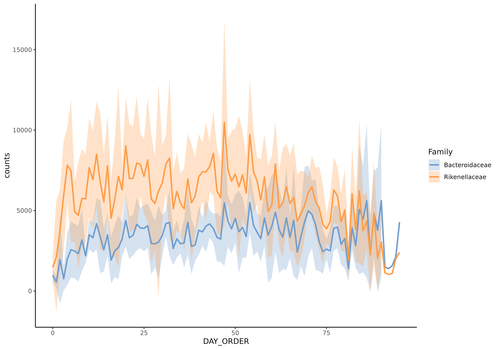
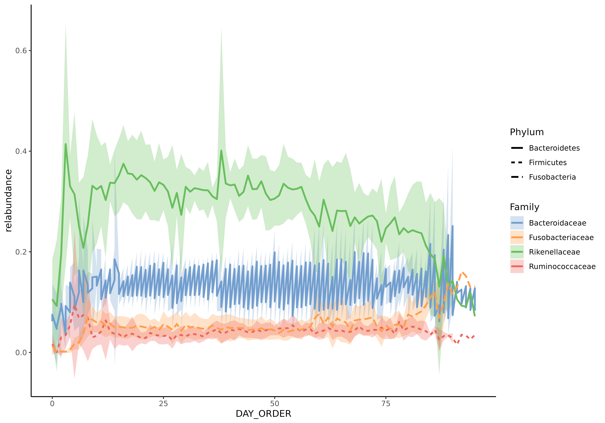
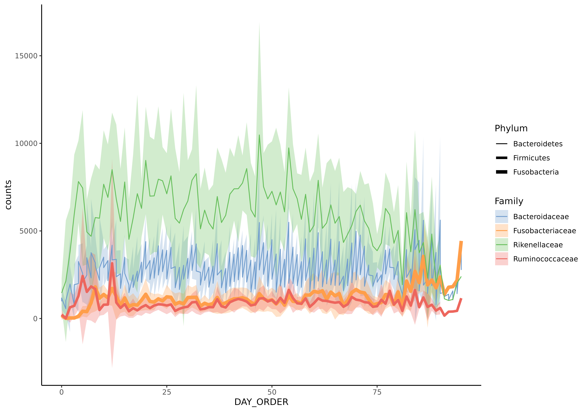

plotSeries.RdThis function plots series data.
plotSeries( object, x, y = NULL, rank = NULL, colour_by = NULL, size_by = NULL, linetype_by = NULL, abund_values = "counts", ... ) # S4 method for SummarizedExperiment plotSeries( object, x, y = NULL, rank = NULL, colour_by = NULL, size_by = NULL, linetype_by = NULL, abund_values = "counts", ... )
| object | a
|
|---|---|
| x | a single character value for selecting the column from
|
| y | a single character value for selecting the taxa from
|
| rank | a single character value defining a taxonomic rank, that is used
to agglomerate the data. Must be a value of |
| colour_by | a single character value defining a taxonomic rank, that is used to
color plot. Must be a value of |
| size_by | a single character value defining a taxonomic rank, that is
used to divide taxa to different line size types. Must be a value of
|
| linetype_by | a single character value defining a taxonomic rank, that
is used to divide taxa to different line types. Must be a value of
|
| abund_values | a single character value for selecting the
|
| ... | additional parameters for plotting |
A ggplot2 object
This function creates series plot, where x-axis includes e.g. time points, and y-axis abundances of selected taxa.
Leo Lahti and Tuomas Borman. Contact: microbiome.github.io
#>#>#>#>#>#>#>#>#>#>#># Plots 2 most abudant taxa, which are colore by their family plotSeries(object, x = "DAY_ORDER", y = getTopTaxa(object, 2), colour_by = "Family")# Counts relative abundances object <- transformCounts(object, method = "relabundance") # Selects taxa taxa <- c("seq_1", "seq_2", "seq_3", "seq_4", "seq_5") # Plots relative abundances of phylums plotSeries(object[taxa,], x = "DAY_ORDER", colour_by = "Family", linetype_by = "Phylum", abund_values = "relabundance")# In addition to 'colour_by' and 'linetype_by', 'size_by' can also be used to group taxa. plotSeries(object, x = "DAY_ORDER", y = getTopTaxa(object, 5), colour_by = "Family", size_by = "Phylum", abund_values = "counts")#> Warning: Using size for a discrete variable is not advised.